Many interests.
One personal voice.
Ted.Promotional videos, brand stories and daily creations.
Turn ideas into pictures and leave life in the works.
01 / PROMOTIONAL FILMS
Promotional video and brand expression.
Only three new versions of the MIRA robot opening are shown.
02 / LITTLE COMPANIONS
My kitten is also here.
Companionship outside of work, small things in life.
18 photos, click to enlarge.
03 / EVERYDAY MOMENTS
Some daily fragments.
Outside the camera, it’s also me.
04 / LIFE IN FRAMES
Life in the lens.
Instagram @tedzhnnnn1231
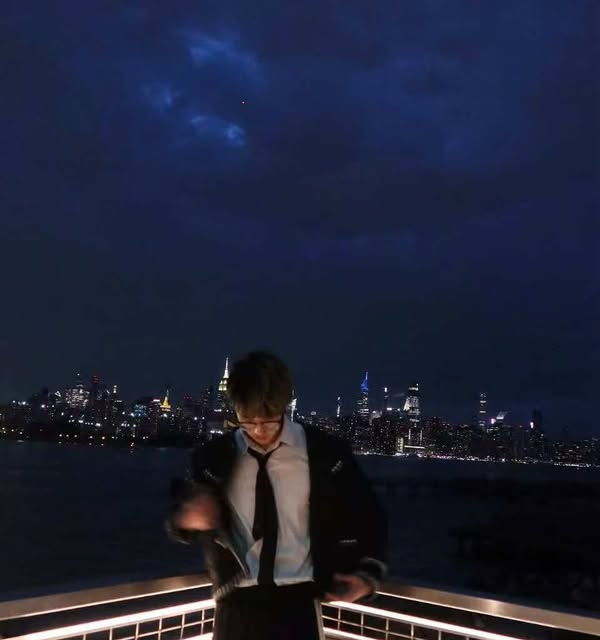
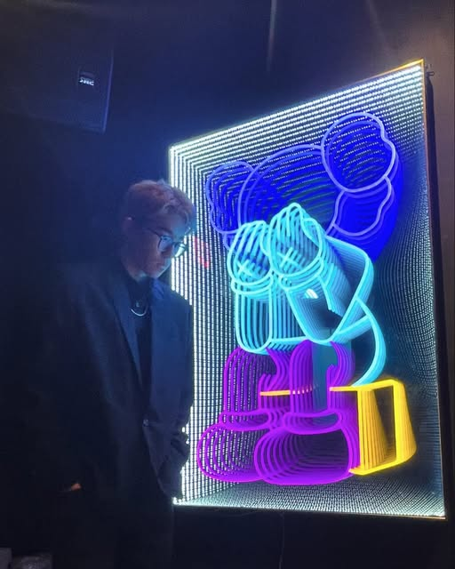
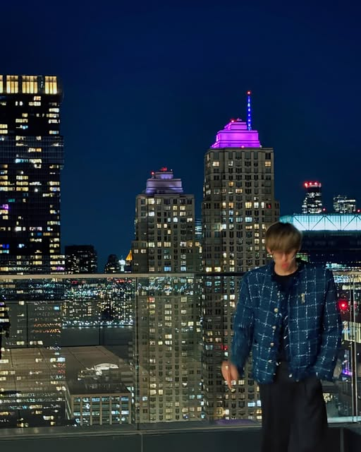
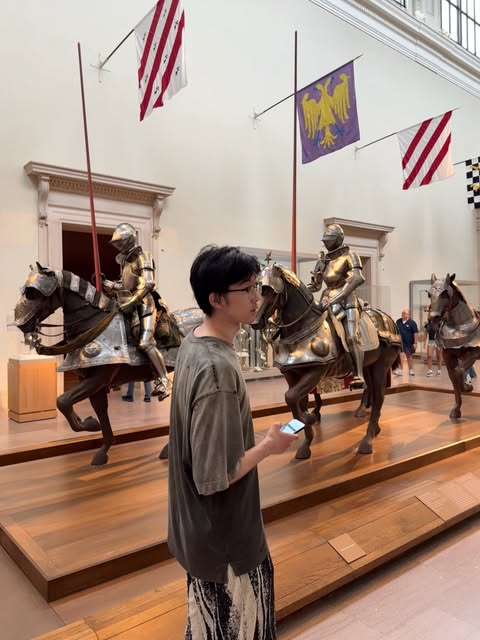
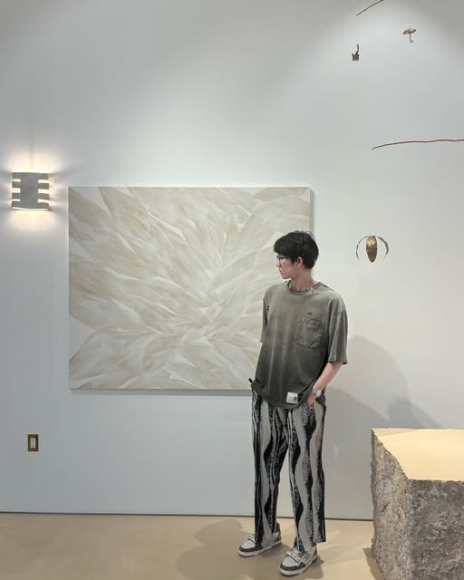
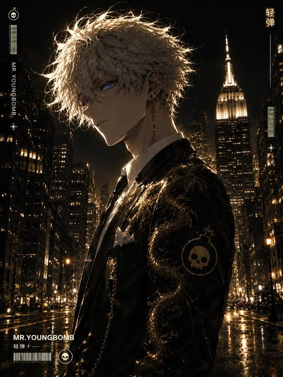
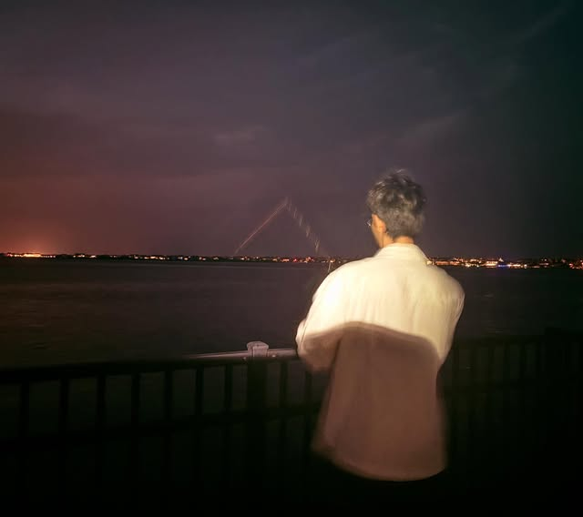
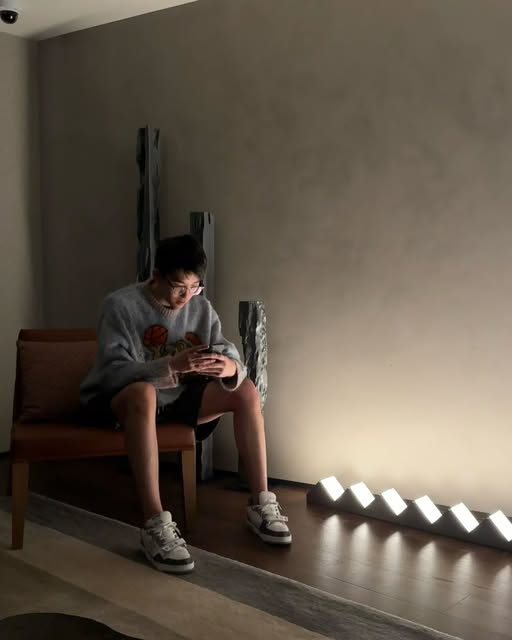

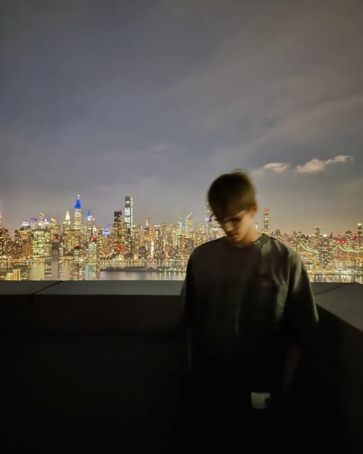
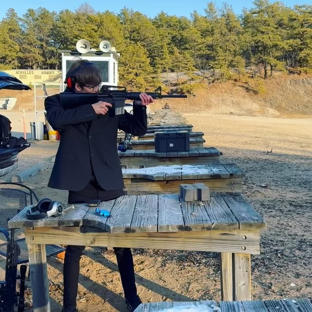
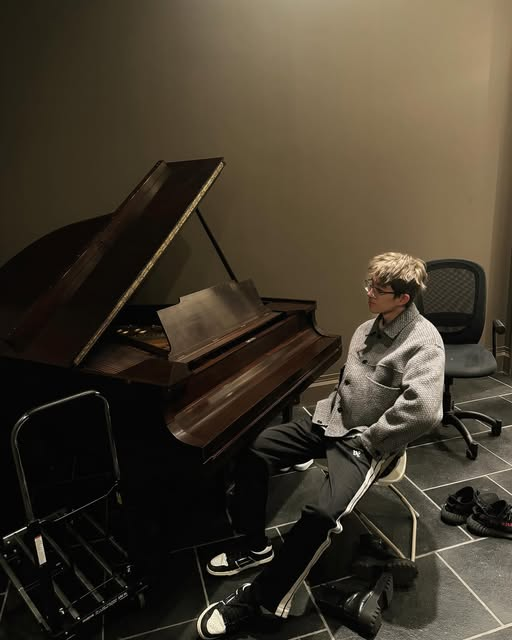
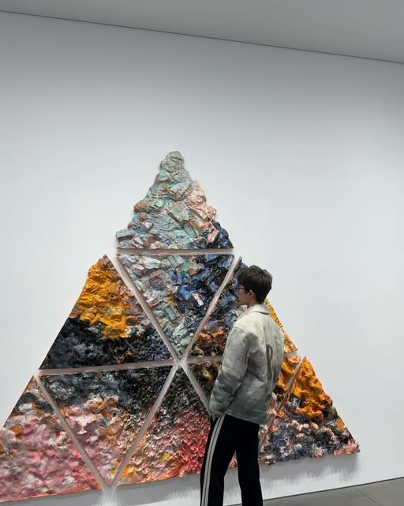
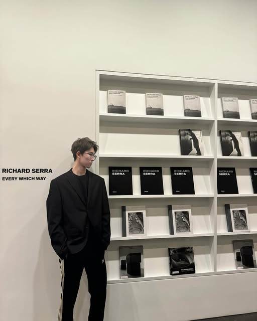
14 publicly visible post covers have been included. Click on the photo to enlarge it. The original carousel image and the rest of the content require an Instagram login and have not yet been fully imported.
Continue watching on Instagram ↗